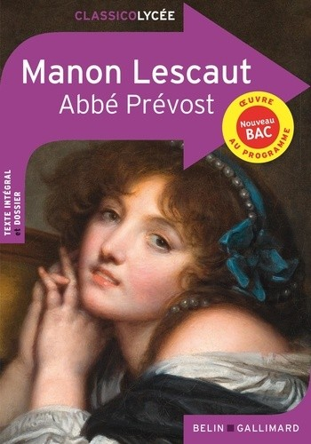

Le roman Manon Lescaut a été écrit par Abbé Prévost au XVIIIe siècle. Il raconte l’histoire d’amour passionnée entre le chevalier Des Grieux et Manon, une jeune femme belle et séduisante. Dès leur rencontre, Des Grieux tombe amoureux d’elle et abandonne sa famille ainsi que ses études pour vivre avec elle. Cependant, leur relation est compliquée par le manque d’argent et par le goût de Manon pour le luxe et le confort. Les deux personnages vivent alors plusieurs aventures marquées par la fuite, la tromperie, la jalousie et la souffrance. Malgré les erreurs de Manon, Des Grieux continue de l’aimer profondément. À la fin du roman, Manon meurt en exil en Amérique, laissant Des Grieux désespéré. À travers cette histoire tragique, le roman montre la force de la passion amoureuse mais aussi les dangers du désir et des choix impulsifs.